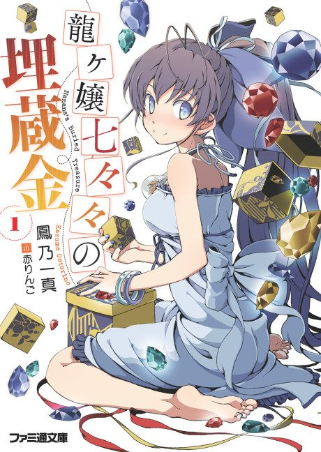

Nanana's Buried Treasure
龍ヶ嬢七々々の埋蔵金
After the anime, read the light novel from Volume 5.
6.8AniList score
—Animeter, no votes yet
11episodes
Anime finished. Where does the story go next?
Start at Volume5
The anime covers the plot through the end of volume 4, so continue from volume 5 (the source suggests volume 4 for a smoother pickup). The light novel is complete at 12 volumes.
1412 end
Season 1Start reading here